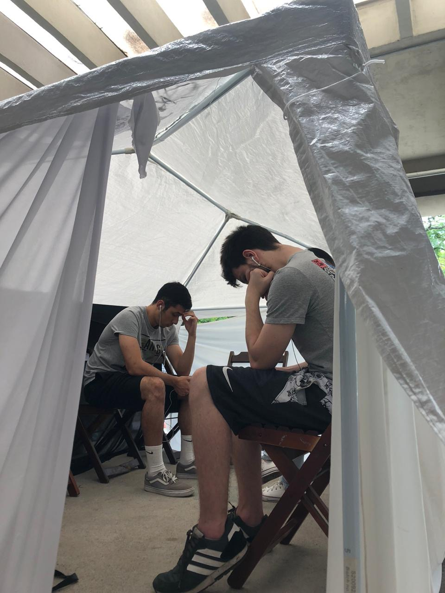
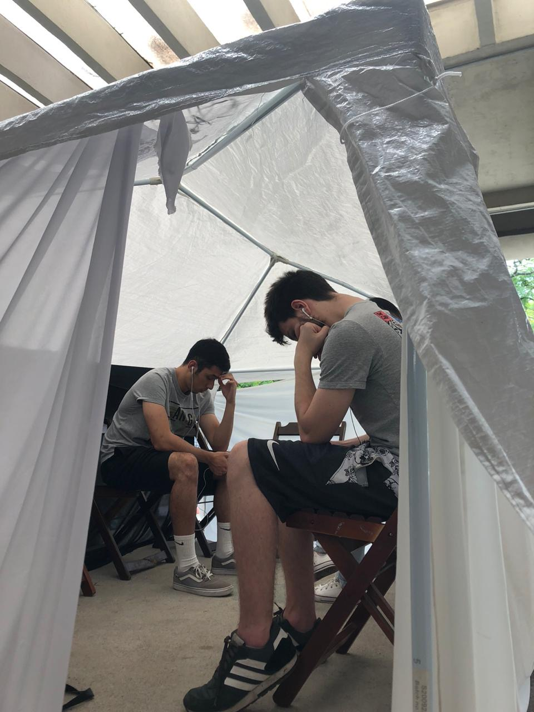

Depoimento da Nádila - 4:41
O Relato de Nádila faz parte da exposição "Mulheres Empreendedoras" do Museu Pra Quem?, no ano de 2019.
Todos os direitos reservados.
Depoimento da Micheli Junco - 4:41
O Relato de Micheli Junco faz parte da exposição "Mulheres Empreendedoras" do Museu Pra Quem?, no ano de 2019.
Todos os direitos reservados.
Depoimento da Aline Cabral Pereira José - 5:06
O Relato de Aline Cabral Pereira José faz parte da exposição "Mulheres Empreendedoras" do Museu Pra Quem?, no ano de 2019.
Todos os direitos reservados.
Depoimento da Silvana Trucss - 3:40
O Relato de Silvana Trucss faz parte da exposição "Mulheres Empreendedoras" do Museu Pra Quem?, no ano de 2019.
Todos os direitos reservados.
Depoimento da Giovanna Bessa - 4:51
O Relato de Giovanna Bessa faz parte da exposição "Mulheres Empreendedoras" do Museu Pra Quem?, no ano de 2019.
Todos os direitos reservados.
 
